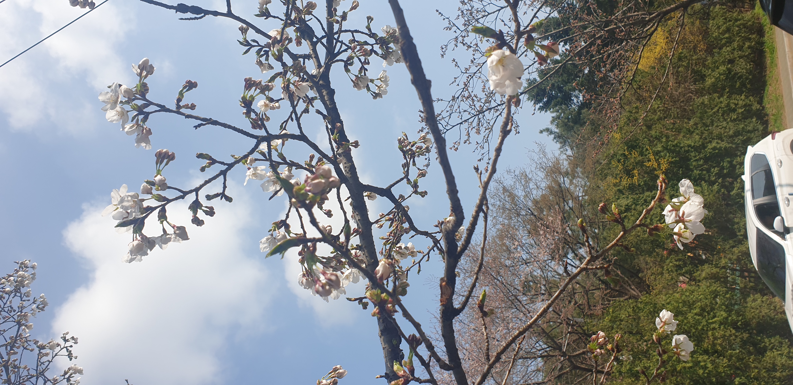

도시가 숨을 고르는 저녁 현장
푸른 저녁빛이 내려앉은 도심 거리와 포장마차, 공사 가림막, 가로등이 함께 만드는 장면입니다. 본격적인 밤의 활기가 시작되기 직전의 짧은 정적과 도시의 거친 리듬을 서정적으로 담고 있습니다.
현재 폴더의 번호형 HTML을 순서대로 정리한 인덱스입니다. 각 항목은 대표 썸네일, 장면 요약, 원본 페이지 링크로 구성했습니다.
푸른 저녁빛이 내려앉은 도심 거리와 포장마차, 공사 가림막, 가로등이 함께 만드는 장면입니다. 본격적인 밤의 활기가 시작되기 직전의 짧은 정적과 도시의 거친 리듬을 서정적으로 담고 있습니다.

건물 4층 테라스에서 내려다본 서울의 오후 풍경을 중심으로 구성된 페이지입니다. 갈색 유리 너머의 사람들, 겹겹이 놓인 건물 실루엣, 부드러운 공기감이 어우러져 차분한 도시 감성을 전달합니다.

BTS 전광판과 통제선, 무대 시설이 만든 긴장감 있는 광장 풍경을 다룹니다. 아직 인파가 몰리기 전의 빈 공간이지만, 곧 시작될 대형 행사의 열기와 기대감을 강하게 예고하는 장면입니다.

푸른 하늘 아래 벚꽃이 만개한 풍경과, 도시 골목 틈새에서 피어난 목련을 함께 보여주는 구성입니다. 화사한 봄의 얼굴과 거친 일상 속에서도 피어나는 생명력을 대비해 담아낸 작품입니다.